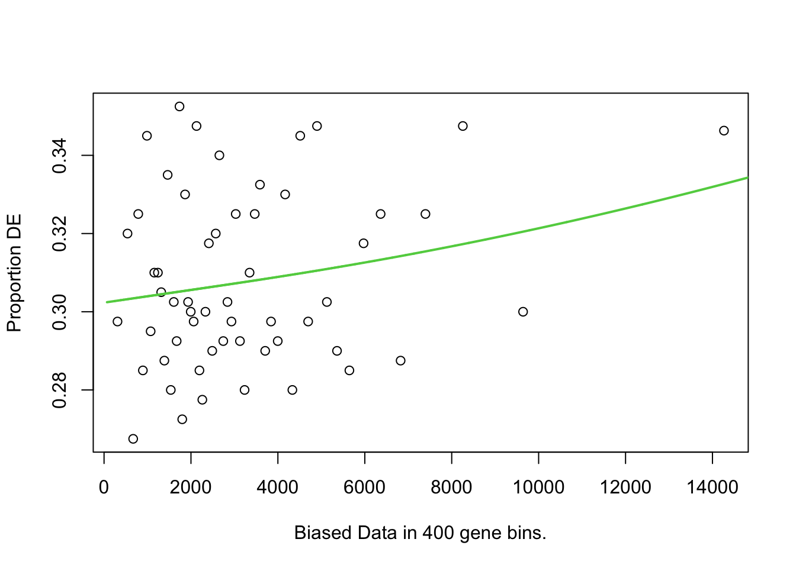

Mini series: Gene ontology analysis for non-model organisms
In this mini-workshop, we will cover how to perform gene ontology (GO) analysis for non-model organisms. Specifially, we will be running through GOseq analysis in R, and show how to perform this when working on organisms that are not in the supported organisms package in goseq() and don’t have an annotation package in Bioconductor.
This is an extension on our RNA-seq workshop, which runs through GOseq analysis but using a supported organism yeast RNAseq workshop link here
Background
We start off our pipeline at the end of the RNAseq read processing steps, but at the beginning of our gene expression analysis journey. An exciting place to be!
In this scenario, we have already:
Sequenced our samples
Trimmed, filtered, aligned our reads to a genome
Produced a count matrix of read counts per gene per sample
Performed differential expression analysis to identify differentially expressed genes (DEGs)
Have a list of DEGs that we want to understand the biological significance of using gene ontology (GO) analysis.
What is gene ontology (GO) analysis?
Gene ontology (GO) analysis is a powerful tool used to understand the biological significance of a list of genes, such as differentially expressed genes (DEGs) from an RNA-seq experiment. GO analysis helps to identify which biological processes, cellular components, or molecular functions are overrepresented in a given gene list compared to a background set of genes.
What objects/files do I need to perform GO analysis?
To perform GO analysis, you typically need the following files or objects in R:
DGE list: A character vector of all the differentially expressed gene (DEGs) IDs. You will need to make two character vectors of DEGs: one for upregulated genes and one for downregulated genes.
Background genes: A character vector of the background gene list.
Gene ontologies: A gene annotation file that maps gene identifiers to GO terms.
Gene lengths: A gene length file to account for gene length bias.
The gene IDs used may be a gene symbol or another identifier such as Ensembl ID, but it should be the same identifier used in every file or object above, as they need to cross-match.
What do each of these objects/files look like?
… and how do we get them?
1. DGE list.
📌💡 Make character vectors of your upregulated gene IDs and downregulated gene IDs, for each pairwise comparison.
Since we are working in R, you likely will be pulling this data directly from your DGE results e.g., the dds object created during DESeq2 analysis.
We are not focussing here on how to run DESeq2, see our RNA-seq data analysis workflow for this.
Code used to generate dds object
Counts and coldata files not supplied in this workshop.
library(DESeq2)library(tidyverse)# >> DGE-related variables ----COUNTS_FILE ="data-files/readspergene_v2.matrix"COLDATA_FILE ="data-files/coldata_v2.3.2.txt"# Specify significance thresholdSIGNIFICANCE_CUTOFF =0.001# >> Counts file ----counts.table =read.table(file=COUNTS_FILE, header =TRUE, sep ="\t", stringsAsFactors =FALSE, row.names ="GeneID")# >> Coldata file ----coldata.table =read.table(file=COLDATA_FILE, header =TRUE, sep ="\t", stringsAsFactors =FALSE, row.names ="sample")#factorisecoldata.table$histov22 <-factor(coldata.table$histov22, levels=c("F","ET","MT","LT","TPM","IPM"))# Create a DESeq2 object for pairwise comparisonsdds <-DESeqDataSetFromMatrix(countData = counts.table, colData = coldata.table, design =~ histov22 )dds <-estimateSizeFactors(dds)# Drop low count genesnc <-counts(dds, normalized=TRUE)filter <-rowSums(nc >=10) >=2dds <- dds[filter,]# Run DESeq2dds <-DESeq(dds)res <-results(dds, alpha=SIGNIFICANCE_CUTOFF)res <- res[order(res$padj),]res <-na.omit(res)# Extract pairwise comparison results comparisons =c("histov22_MT_vs_F")# Initialise lists to store resultsresults_list <-list()de_results_list <-list()for (c in comparisons){# Extract relevant details from comparison cSplit <-strsplit(c, "_") contrast <- cSplit[[1]][1] group1 <- cSplit[[1]][2] group2 <- cSplit[[1]][4]# Obtain pairwise comparison of interest res.pw <-results(dds, alpha = SIGNIFICANCE_CUTOFF, contrast =c(contrast, group1, group2))# Clean up res.pw <- res.pw[order(res.pw$padj), ] res.pw <-na.omit(res.pw)# Convert to data frame and store full results results_list[[c]] <-as.data.frame(res.pw)# Get DE genes and store de_results_list[[c]] <-as.data.frame(res.pw[res.pw$padj < SIGNIFICANCE_CUTOFF, ])}# pull out into individual named objects - just one for this example!df_MT <- de_results_list[["histov22_MT_vs_F"]]# split up and downdfMT_UP <- df_MT[df_MT$log2FoldChange >0 ,] dfMT_DOWN <- df_MT[df_MT$log2FoldChange <0 ,]#test - should be truenrow(dfMT_UP) +nrow(dfMT_DOWN) ==nrow(df_MT)
[1] TRUE
# gene list objects as character vectorsgenes_MT_UP <-rownames(dfMT_UP) genes_MT_DOWN <-rownames(dfMT_DOWN)
No matter how you get there, in the end you want two lists of DE genes for each pairwise comparison, stored in R as character vectors.
You should have one list of upregulated genes and one list of downregulated genes, for each pairwise comparison.
In the example below, the two objects we are using are from a pairwise comparison between female (F) gonads and mid-transitioning (MT) gonads from a sex-changing fish species Notolabrus celidotus (New Zealand spotty wrasse).
The objects should look like this when you run the str() function on them:
📌💡 Make a character vector of all gene IDs that you want to use as a background for your GO analysis.
You need to think carefully about what you want to use as your background gene list. Generating it is fairly straight forward, but it has implications for the analysis. Read more on how overrepresentation analysis works and how the background gene list is used in the analysis here in the functional analysis section of the RNA-seq workshop.
For now, we will use all genes that are expressed in our dataset as the background. We will take these gene IDs by pulling the all the rownames out of the dds object:
Note: earlier when dds was created, low count genes were filtered out, which removed genes not expressed (i.e., zero counts across all samples) and genes very lowly expressed (i.e., less than 10 counts in at least 2 samples).
What does expressed really mean in this context? If one of our genes in our dataset had one read mapping to it in one sample, and all other samples had zero, would you consider this an expressed gene? Most of us probably would agree this does not seem sufficient. Deciding on a read count threshold is up to you as a researcher. In this example above, we used a threshold of 10 counts in at least 2 samples. So in this way, our background of expressed genes will be less than the total number of genes in the genome, but more than the number of DE genes.
We can confirm that there are less genes in the background then there are in the whole list of genes in the genome by running:
length(background)
[1] 22231
nrow(counts.table)
[1] 28261
3. Gene ontologies
📌💡 Make either a dataframe or a tab delimited text file that maps gene identifiers to GO terms.
This needs to be a dataframe/text file with two columns: gene identifier and GO terms. The gene identifier should match the same identifiers used in the DGE list and background genes. This file should contain every gene in your genome; we filter out the genes we want for analysis later. Multiple GO terms for a single gene are separated by commas and genes with no GO term should have a . Whether you have a tab delimited text file or a dataframe in R, it should look something like this:
The gaf file looks like this. You will need to take the ‘Symbol’ column and the ‘GO_ID’ column to make your gene ontology file. You will also need to collapse multiple GO terms for a single gene into a single cell, separated by commas. Genes with no GO term should have a .
The final gene ontology file should look like this (tsv format):
Option 2 (harder): Derive GOs from BLAST and Pfam annotations. This is more work, but may be necessary if you don’t have a .gaf file available for your organism. You can use tools like InterProScan to annotate your genes with GO terms based on their sequence similarity to known proteins. BLAST2GO is another tool (commercial - need a license) that can be used to assign GO terms to genes based on BLAST results (i.e., BLASTing against organisms that do have GO annotations, usually from the evolutionarily nearest model organism!). This approach may be more time-consuming and may not yield as comprehensive GO annotations as using a .gaf file, but it can be a useful alternative for non-model organisms. If you generate Pfam annotations through another pipeline (e.g., through hmmer) you may also need to download the latest PFAM2GO mapping file to retrieve GO terms for your genes based on their Pfam domains.
4. Gene lengths
📌💡 Make either a dataframe or text file with two columns - gene IDs and lengths (in bp)
This may start off as a tab delimited text file or a dataframe with two columns: gene identifier and gene length. The gene identifier should match the identifiers used in the DGE list and background genes. The gene length is in base pairs (bp). Whether you have a tab delimited text file or a dataframe in R, it should look something like this:
Getting gene lengths sounds straightforward, but it depends on how you define the length of a gene — and there are several reasonable definitions that give different answers.
One approach is to use the genomic span of a gene: the distance from the first base to the last base across the gene body. This is easy to extract from a GFF/GTF file but includes introns, which are not actually transcribed into mature mRNA.
A more accurate definition for RNA-seq purposes is the union exon length: the total number of base pairs covered by exons, after merging overlapping exons from different isoforms of the same gene. This better reflects the sequence that reads actually map to.
Ideally, make a file/object that has gene lengths for all genes in your genome – you will filter out the genes you need for analysis later.
Option 1 (easiest): If you used featureCounts to generate read counts, extract the Length column from the output. This column contains the union exon length for each gene (assuming you used -t exon and -g gene_id options when running featureCounts).
Option 2 (easy enough): Use the gene annotation file (e.g., GFF3 or GTF) for your organism, and use a package such as GenomicRanges to extract the union exon length for each gene.
The code for option 2 this should look something like this:
# generate gene lengths from gtf# BiocManager::install(c("GenomicRanges", "rtracklayer"))library(GenomicRanges)library(rtracklayer)# Import only exon featuresexons <-import("data-files/GCF_009762535.1_fNotCel1.pri_genomic.gtf", feature.type ="exon")exons <- exons[!is.na(exons$gene_id)] # optional# Split by gene, reduce overlapping exons, sum widthsexons_reduced <- GenomicRanges::reduce(split(exons, exons$gene_id))geneLengths <-data.frame(GeneID =names(exons_reduced),Length =sapply(exons_reduced, function(x) sum(width(x))),row.names =NULL)head(geneLengths)
Option 3 (de novo assembly): Lastly, if you are doing de novo transcriptome assembly, you may want to use the weighted average length of the assembled transcript as the gene length (and you will need to round this number to the nearest whole number). This approach uses how expressed each isoform is (TPM) to weight how much each isoform length contributes to the calculated average gene length - read more here on the trinity rnaseq wiki.
Running GOseq analysis
First let’s load in and orientate ourselves to our objects. We’ll pull in example data from our Genomics Aotearoa GitHub.
# load in all objectsgenes_MT_UP <-read_rds("data/genes_MT_UP.rds")genes_MT_DOWN <-read_rds("data/genes_MT_DOWN.rds")background <-read_rds("data/background.rds")geneLengths <-read_rds("data/geneLengths.rds")geneOntologies <-read_rds("data/geneOntologies.rds")
# Orientate yourself to variables head(genes_MT_UP) head(genes_MT_DOWN)head(background)head(geneLengths)head(geneOntologies)
We need to do some pre-analysis processing. First the gene ontologies need to be reformatted into a list.
# Generate GO mapping structure, final object splitgoannot list ----geneOntologies[geneOntologies =="."] <-NA#change all dots to NAssplitgoannot <-strsplit(geneOntologies[,2], split=',')names(splitgoannot) <-as.vector(geneOntologies[,1])
The splitgoannot object is a large list. You can check the structure of it by running str(splitgoannot). The names of the list are the gene IDs, and the values are vectors of GO terms.
Next we need to turn our gene lengths into a named vector.
# Load in gene lengths, final object length.vector is a named vector ----# note - lengths must be whole numbers, use as.integer(round(genelengths$Length)) if you have decimal places.length.vector <-setNames(geneLengths$Length, geneLengths$GeneID)length(length.vector)
We will now cull the length.vector to only contain the genes that are in our background gene list. It is best to start with a length vector that contains all genes in the genome; this way if you decide to change your background gene list later, you won’t have to go back and re-generate the original length vector. If you get errors below (or a FALSE in the test), it may be that there are genes in your background gene list that don’t have a length in the length vector. This could happen if you missed genes from the genome when you generated your original length file and would have to go back and check your work.
# Cull length.vector that don't show up in the background gene list. length.vector <- length.vector[names(length.vector) %in% background] #test - should be TRUE length(length.vector) ==length(background)
[1] TRUE
The last thing we need to do before running GOseq is to generate a named vector of 0s and 1s, where the names are the gene IDs in our background gene list, and the values are 1 if the gene is a DEG and 0 if it is not. We will generate this for both our upregulated and downregulated gene lists.
We’ll start with the upregulated gene list.
# Create a vector identifying which genes are identified as DE in this analysisDE.vector <- background %in% genes_MT_UP## test - should be TRUE## sum counts up how many TRUE are in the DE.vector object, and there should be a TRUE in each position where a gene matched the genes listed in genes_MT_UPsum(DE.vector) ==length(genes_MT_UP)
[1] TRUE
# Convert TRUE to 1 and FALSE to 0DE.vector <- DE.vector *1## turn the DE.vector into a named vector, where the names are the gene IDs in the background gene list.names(DE.vector) <- background## test again- should still be TRUEsum(DE.vector) ==length(genes_MT_UP)
[1] TRUE
# last test - DE.vector should have the same number of genes as the length.vector now.length(DE.vector) ==length(length.vector)
[1] TRUE
Now we are ready to run the two step GOseq analysis! in the nullp() function, the object DE.vector, used for the DEgenes argument is the same as we’d have made if we ran this analysis using a supported organism, but the bias.data argument differs here (and we also don’t specify which genome and gene ID type we are using, as we would if we were using a supported organism!). The argument gene2cat in goseq() is where we input our custom gene ontology mapping file, which is also different to how we’d run this if we were using a supported organism.
# BiocManager::install("goseq")library(goseq)# Run PWF for length bias correctiondata.pwf <-nullp(DEgenes=DE.vector, bias.data=length.vector)
Warning in pcls(G): initial point very close to some inequality constraints

# Run GOseq go_output <-goseq(data.pwf, gene2cat = splitgoannot)
Processing the GOseq results
The go_output object is a dataframe that contains all the GO terms that were tested, but is not filtered to only show significant results. The columns over_represented_pvalue and under_represented_pvalue contain the p-values for over-representation and under-representation of each GO term, respectively. We can filter the go_output dataframe to only show significant results based on a chosen significance threshold.
In this specific example, we were investigating genes upregulated in mid-transitioning (MT) gonads compared to female gonads (F) and so our output file names reflect this.
# Write output to tsv files write_tsv(go_output, file="MT_DOWN_vs_F_goseq.tsv")write_tsv(go_output.SIG.MT_DOWN, file="MT_DOWN_vs_F_sig0.05_goseq.tsv")
Organise data further into over and underrepresented
Our output above contains results filtered down to only significant results, but it still contains both over-represented and under-represented GO terms, which need to be considered separately.
We should end up with 4 objects or files for each pairwise comparison:
Upregulated genes - over-represented GO terms
Upregulated genes - under-represented GO terms
Downregulated genes - over-represented GO terms
Downregulated genes - under-represented GO terms
As you can imagine, this can end up being a lot of files if you have many pairwise comparisons!
We’re going to need a new column Gene Ratio for plotting later, so we will generate that now before we split the data into over and under-represented. The Gene Ratio is the number of DE genes in the GO term divided by the total number of genes in that GO term. This is the proportion of DE genes with that GO term e.g., a Gene ratio of 0.5 means that 50% of the genes in that GO term are DE.
For today, we’ll do this for upregulated genes only.
# test - should be TRUEnrow(goout_MT_UP_over) +nrow(goout_MT_UP_under) ==nrow(go_output.SIG.MT_UP)
[1] TRUE
There are often less under-represented GO terms than over-represented; we can check how many GOs are in each df with:
nrow(goout_MT_UP_over)nrow(goout_MT_UP_under)
Plot data
Lastly, let’s plot the top 5 over-represented GO terms for upregulated genes in MT vs F. We will use the GeneRatio column we generated above for the y-axis, and we will colour the bars by the -log10 of the p-value, which is a common way to visualise p-values in GO analysis. Using a negative log scales very small p-values (most significant) and larger pvalues on a visually more manageable scale, and also means that the bigger the number the more signinficant (here, small p-values become higher numbers and are coloured red).
library(ggplot2)goout_MT_UP_over %>%filter(!is.na(ontology)) %>%# filter out any NAsslice_min(over_represented_pvalue, n=5) %>%#top N by pvalue eg top 10 or 20. Note slice_min = smallest pvalue, slice_max = largest pvalueggplot(aes(x =reorder(str_wrap(term, width =18), GeneRatio), y = GeneRatio, fill =-log10(over_represented_pvalue))) +geom_bar(stat ="identity") +coord_flip() +scale_fill_gradient(low ="blue", high ="red") +scale_y_continuous(expand =c(0, 0)) +# Removes extra paddinglabs(title="Top 5 overrepresented GO terms in genes upregulated in MT, vs F",x ="GO Term", y ="GeneRatio", fill ="-log10(p-value)") +theme_classic()